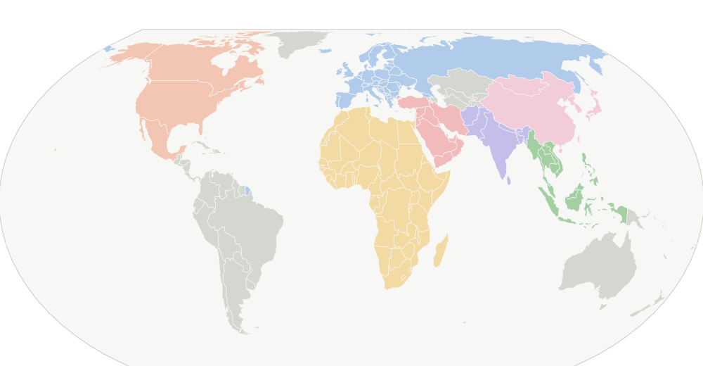

BMW, 사우스캐롤라이나 배터리 공장 개소…2030년까지 전기차 6종 생산 계획
SC Daily Gazette는 BMW가 사우스캐롤라이나주에 배터리 공장을 열었으며 2030년까지 전기차 6종을 생산할 계획이라고 2026년 11월 13일 보도했다. 원문 요약은 공장 개소와 생산 계획만 짧게 전한다.
현지 배터리 공급 체계가 갖춰지면서 미국 생산 차종의 배터리 조달과 차종 구성 계획을 함께 살펴볼 필요가 있다.

SC Daily Gazette는 BMW가 사우스캐롤라이나주에 배터리 공장을 열었으며 2030년까지 전기차 6종을 생산할 계획이라고 2026년 11월 13일 보도했다. 원문 요약은 공장 개소와 생산 계획만 짧게 전한다.
현지 배터리 공급 체계가 갖춰지면서 미국 생산 차종의 배터리 조달과 차종 구성 계획을 함께 살펴볼 필요가 있다.
Xataka México는 2026년 11월 13일 폭스바겐이 중국에서 생산한 '젯타' 계열 세단을 '라만도(Lamando)'라는 이름으로 멕시코에 들여온다고 보도했다. 이 모델은 푸에블라에서 생산되는 동급 모델과 경쟁하게 된다.
같은 모델명 아래 생산지가 다른 두 차종이 한 시장에서 맞붙는 구도라, 현지 생산 모델과 수입 모델의 가격·사양 차별화 기준이 필요하다.
멕시코 매체 Autocosmos는 폭스바겐 라마도(Lamando)가 11월 25일 공개된다고 보도했다. 차량 사양과 가격 등 세부 정보는 전해지지 않았다.
일본 매체 트랜스카(トランスカー)는 2026년 11월 13일 일본 경차와 경트럭이 미국에서 팔릴 수 있을지 짚었다. 토요타 사이온 KEI-01을 예로 들어 가능성을 검토했다.
현대차가 코나의 중간 주기 페이스리프트를 건너뛰고 완전히 새로 설계한 3세대 모델을 출시할 계획이라고 Electrek이 보도했다. 이 매체는 테스트 차량 포착을 근거로 더 수직적인 전통 SUV 디자인을 전망했으며, 전기차 버전 유지 가능성도 함께 언급했다.
더 높고 각진 SUV 프로파일로 바뀌면 실내 헤드룸과 적재 공간, 전기차 배터리 배치에 영향을 줄 수 있어 패키지 설계를 함께 검토할 필요가 있다.
Car and Driver는 2026년 11월 13일 포드가 2도어 F-150 Lobo 스트리트 트럭을 준비 중일 수 있다는 위장 시제차 스파이 사진을 보도했다. 현재 Lobo는 4도어 크루캡으로만 나오며, 사진 속 시제차는 기본 트림 XL의 레귤러캡 바디에 Lobo 전용 사각형 앞범퍼와 FP700S 타이어가 장착된 모습이다. 시제차에는 Lobo와 달리 호박색 주간주행등이 달린 할로겐 헤드램프가 적용됐다.
레귤러캡 기반 Lobo가 나오면 2도어 차체에서 후석 공간과 적재 구성, 헤드램프 등 등급별 부품 조합을 함께 검토해야 한다.
Car and Driver는 2026년 11월 13일 어큐라가 2027년형 Integra Type S에 복고 테마의 Heritage Edition을 추가했다고 보도했다. 기본 Type S는 검은색 19인치 휠과 노란색 브레이크 캘리퍼가 기본 적용되고, 실내 어두운 포인트와 시트 소재 옵션이 바뀌었다. 파워트레인은 변하지 않아 320마력 2.0리터 터보 4기통과 6단 수동 변속기가 유지된다. Heritage Edition은 DC2 Type R을 떠올리게 하는 Blazing Phoenix Yellow 도장과 검은 배지, 구리색 휠을 쓴다. 어큐라는 창립 30주년을 기념하는 모델이라고 설명했다.
기본형 휠과 캘리퍼 색을 기본 사양으로 바꾼 점은 트림 간 외관 차별화를 어떤 요소로 나눌지에 대한 기획 참고가 된다.
electrive는 2026년 11월 13일 폭스바겐의 Scout 브랜드가 미국 사우스캐롤라이나 Blythewood의 신공장에서 첫 검증 차량 생산을 시작했다고 보도했다. 회사는 이 공장을 20억 달러 이상 투자, 4,000명 이상 고용 규모로 설명했다. 공장은 최종 단계 공사가 진행 중이며 대부분의 생산 설비가 설치되어 시운전 중이다. 검증 차량은 차량 기술, 생산 가능성, 부품 품질을 확인하는 데 쓰이며, Scout CEO Keogh는 전기 SUV와 트럭을 기다리는 고객에게 실질적 진전이라고 말했다.
미국 위스콘신주 애플턴 경찰이 순찰차에 더 깔끔해진 새 외관 디자인을 적용한다고 The Post-Crescent가 보도했다.
공용 차량의 도색·표기 단순화는 다수 차량을 운용하는 기관 차량에서 식별성과 유지보수 비용 사이의 균형을 어떻게 잡을지 보여준다.
Motor1.com은 셸비 코브라 팀과의 경쟁에서 문제를 일으켰던 콜벳이 약 1,300만 달러에 거래될 수 있다고 보도했다. 낙찰 여부나 실제 거래 조건은 기사 제목에 근거해서만 전해진다.
TeslaNorth.com은 2026년 11월 13일 캐나다 정부가 전기차 사치세(luxury tax) 적용 기준가를 15만 달러로 올리는 방안을 제안했다고 보도했다. 제안 단계이며 시행 시점은 텍스트에 없다.
사치세 기준가 상향은 고가 전기차 라인업의 가격 포지셔닝과 캐나다 시장 트림 구성에 직접 영향을 준다.
Expansión은 2026년 11월 13일 토토 볼프가 멕시코에서 새 메르세데스-AMG GT 4-Door Coupé를 공개했다고 보도했다. 제목 수준의 정보만 확인된다.
Radio Fórmula는 2026년 11월 13일 마즈다 MX-5 RF 클럽 2027년형이 멕시코에 출시됐다고 전했다. 수동 변속기, 브렘보(Brembo) 브레이크, 717,900페소 가격이 함께 소개됐다.
멕시코 시장 가격대(717,900페소)와 수동 변속기 구성은 현지 트림 기획과 옵션 패키지 설정의 기준이 된다.
Automotive News는 다치아가 신형 Spring EV를 18,000유로 미만 가격으로 출시해 중국 전기차 경쟁자에 맞서려 한다고 2026년 11월 13일 보도했다.
가격 상한을 18,000유로 미만으로 잡은 저가형 전기차 기획에서 원가 절감과 사양 선택의 기준점으로 참고할 만하다.
네덜란드 매체 Luxe Infinity는 800마력급 하이퍼카 '사리바티 ONE(Sanrivatti ONE)'이 네덜란드에서 공개됐다고 보도했다. 가격과 생산 규모 등 세부 정보는 전해지지 않았다.
이탈리아 매체 Motor1.com Italia는 신형 마세라티 MCPura를 사례로 마세라티 차량이 어떻게 디자인되는지 다뤘다. 기사 요약문만 공개된 상태로 구체적인 디자인 설명은 확인되지 않는다.
이탈리아 매체 Giornale La Voce는 스텔란티스가 신형 전기차 생산을 위해 중국 리프모터와 협력할 준비를 하고 있다고 보도했다. 같은 기사에서 Filosa 최고경영자는 비용 부담에 대한 우려를 제기했다.
서울경제TV는 2026년 11월 13일 벤틀리의 첫 전기차에 대한 극한 테스트 영상을 소개했다. 시속 160km로 쇠구슬을 발사하는 시험이 포함됐다고 보도했다.
모터그래프는 2026년 11월 13일 벤틀리 최초의 전기차 토르칼(Torkal)이 위장막을 벗기까지의 과정을 정리해 보도했다. 시험차 단계를 거쳐 공개에 이른 흐름을 다뤘다.
튀르키예 매체 Teknoblog는 독일이 연결형(커넥티드) 차량과 관련해 시설 단위로 제한을 두기로 했다고 보도했다. 적용 대상과 시행 시기는 요약에 나오지 않았다.
Yanko Design은 2026년 11월 13일 영국 컨버터 Bodans가 폭스바겐 Caddy 플랫폼 기반의 초소형 캠퍼밴 Cubert를 선보였다고 보도했다. 차량은 114마력 플러그인 하이브리드 파워트레인을 쓰며 최대 116km 주행이 가능하다고 소개됐다. 실내는 운전석 뒤 공간에 긴 전환식 소파와 맞은편 주방을 배치했고, 주방에는 오프그리드용 전기 인덕션 hob, 큰 싱크, 서랍형 냉장고, 수납장이 있다. 소파는 더블 베드로 바뀌며 아래쪽에 캠핑 장비 수납 공간이 있다. 뒷부분 루프는 올라가 머리 공간과 메시 창을 통한 환기를 늘린다.
좁은 실내에서 서랍형 냉장고와 침대 하부 수납을 어떻게 배치하는지가 소형 캠퍼밴의 사용성을 좌우한다.
El Carro Colombiano는 2026년 11월 13일 BYD가 스페인에서 자동차를 생산하는 방안을 검토하고 있으며, 유럽에 준비 중인 공장과 관련된 것이라고 보도했다. 생산 규모와 일정은 제목에 나타나지 않는다.
carwow.de는 시트로엥 e-C3의 실제 유지 비용을 짚는 기사를 게재했다. 소형 전기차의 운행 단계 비용 구조를 다룬 내용으로 보인다.
소형 전기차 타깃 기획 시 구매가보다 유지비 구조가 고객 판단에 미치는 영향을 검토할 근거가 된다.
VISION mobility는 독일 폴크스바겐 엠덴 공장에서 ID. 티구안이 공장의 기대주로 주목받고 있다고 전했다. 무지개 도색 관련 내용도 함께 다뤄졌다.
네덜란드 기반 매체 AutoNext.co는 2026년 11월 13일 산리바티 One이 운전자를 앞쪽으로 눕힌 자세로 배치하며 Judd V10 엔진을 탑재한다고 보도했다. 차체 치수나 출력 등 세부 사양은 요약문에 포함되지 않았다.
운전자 자세를 눕히는 레이아웃은 시야, 조작계 배치, 탑승 진입 방식에 직접 영향을 준다.
영국 자동차 매체 PistonHeads가 11월 13일 신형 BMW i3와 AMG GT 4-Door의 시승기를 공개했다. 기사 요약 외 세부 평가 내용은 확인되지 않는다.
The Sun은 11월 13일 영국의 한 Mini 공장이 부품 부족을 이유로 갑자기 생산을 멈추고 2주간 가동을 중단했다고 보도했다. 중단 원인과 규모에 대한 세부 내용은 기사 요약에 담기지 않았다.
부품 공급망 차질이 생산 일정과 출시 계획에 직접 영향을 줄 수 있어, 부품 조달 여유분과 대체 공급처 확보가 기획 단계에서 점검 대상이 된다.
영국 Auto Express의 시승 기사는 신형 Dacia Spring EV가 대부분의 영역에서 좋은 인상을 줬다고 평가했다. 평가 항목별 세부 내용은 요약에서 확인되지 않는다.
남아프리카공화국 매체 Carmag South Africa는 마힌드라 Lifestyler 픽업(bakkie)이 위장막을 두른 채 남아공 도로에서 포착됐다고 2026년 11월 13일 보도했다. 2027년 출시를 앞둔 테스트 차량으로 보인다는 것이 매체의 설명이다.
이집트 매체 Masrawy는 둉펑(Dongfeng) BOX가 11월 이집트에서 중국 브랜드 차량 가운데 가장 저렴한 모델이라고 2026년 11월 13일 보도했다. 가격 수치는 원문 제목에 명시되지 않았다.
이집트 매체 shift-eg는 폭스바겐 골프가 한동안 자취를 감춘 뒤 이집트에 공식적으로 돌아왔다고 2026년 11월 13일 보도했다. 가격은 메인 이집트 파운드 기준 189만 파운드(1,890,000 EGP)로 제시됐다.
현지 공식 유통 재개 시점의 가격대가 제시된 만큼, 유럽 해치백의 현지 가격 경쟁력 판단에 참고할 수 있다.
나이지리아 매체 The Economic Times는 2026년 11월 13일 NADDC와 EMPAN이 현지 전기차 제조를 위한 로드맵을 추진한다고 보도했다. 세부 일정과 생산 규모는 제시되지 않았다.
나이지리아 매체 Tribune Online은 2026년 11월 13일 오릴-아게게 지역이 전기차 사업을 공개하고 청년들의 중국 기술 교육을 후원한다고 보도했다. 사업 규모와 일정은 확인되지 않은 상태로 전해졌다.
Ekonomim은 2026년 11월 13일 튀르키예에서 전기차 15종의 실제 주행 가능거리를 측정한 결과, 어느 차량도 제조사 표기 수치에 도달하지 못했다고 보도했다. 측정 조건과 개별 차종별 수치는 요약에 포함되지 않았다.
실측 주행거리가 표기보다 낮게 나온다면 기획 단계에서 배터리 용량과 航속 조건 가정을 보수적으로 잡을 필요가 있다.
Kamu Son Dakika Haberleri는 2026년 11월 13일 첫 차를 사려는 사람을 위한 특별소비세(ÖTV) 면제 차량 안건이 대국민의회(TBMM)에 제출됐다고 전했다. 면제 대상 차량의 가격대와 조건은 요약에 나오지 않았다.
특소세 면제 조건(가격 상한, 차종 크기, 최초 구매 요건)에 따라 소형차 라인업과 엔트리 트림의 기획 방향이 달라질 수 있다.
인도 자동차 매체 Overdrive는 마힌드라가 NU IQ 플랫폼 기반의 새 SUV 한 종을 2027년 6월까지 내놓을 계획이라고 2026년 11월 13일 보도했다.
NU IQ 플랫폼을 공유하는 차종 라인업은 차체 패키지와 부품 공용화 측면에서 신차 기획의 기준점이 된다.
인도 매체 CarLelo는 마힌드라가 2027년형 Thar Roxx와 Lifestyler를 포함해 신형 SUV 2종을 6월까지 출시한다고 2026년 11월 13일 보도했다. 같은 시점에 출시되는 라인업이 여러 종이라는 점이 함께 전해졌다.
BYD의 고급 브랜드 덴자(Denza)가 인도 시장에 진출하며 D9 MPV와 Z9 GT 전기차를 선보였다고 Livemint가 2026년 11월 13일 보도했다. 매체는 가격, 주행거리, 편의사양을 함께 정리했다.
인도 고급 전기 MPV와 GT 전기차의 가격대 및 주행거리 기준이 현지 수요 세분화와 충전 인프라 조건에 맞는지 검토할 필요가 있다.
Navbharat Live는 인도에 태양광과 전기 구동을 결합한 자동차가 나왔다고 전했다. 햇빛으로 하루 10~12km의 추가 주행거리를 얻을 수 있다고 소개했다. 차종과 가격, 판매 조건은 기사 요지에서 확인되지 않는다.
태양광 패널로 얻는 추가 주행거리가 하루 기준으로 제시된 만큼, 지붕 면적과 일조 조건에 따라 실사용 효과가 달라질 수 있어 현지 사용 조건 설정에 참고가 된다.
파키스탄 매체 Pakwheels는 Super Power Leo 200이 현지에서 출시됐다고 보도했다. 이 매체는 가격이 일본산 150cc 바이크보다 낮다는 점을 강조했다. 다만 보도 본문에서 확인된 세부 가격과 사양은 제한적이다.
현지 가격 경쟁력이 배기량 체급 선택에 영향을 줄 수 있어, 가격 대비 사양 구성을 정할 때 참고할 만하다.
Cartoq는 2027년에 출시될 기아와 현대의 SUV 5종을 소개하며 기아 셀토스 하이브리드와 차세대 현대 크레타를 포함시켰다. 인도 시장 기준으로 다룬 기사다.
인도 준중형 SUV 시장에서 하이브리드 라인업 확대가 기획 우선순위에 어떤 영향을 줄지 검토할 만하다.
현대차의 아이오닉 5 SDV 테스트카 사진이 Korean Car Blog를 통해 2026년 11월 13일 소개됐다. 보도에 따르면 이 테스트카에는 계기판(인스트루먼트 클러스터)이 장착되어 있지 않다. 다만 전체 구성이나 양산 계획에 대한 추가 정보는 확인되지 않은 상태로 전해졌다.
계기판을 제거한 구성이라면 운전자 정보 표시를 HUD나 센터 디스플레이로 옮기는 방식의 조작계 배치를 검토할 필요가 있다.
중국 매체 汽车之家는 위장막 차량 사진을 통해 Yangwang(仰望) UX의 대문(도어) 설계가 처음 드러났다고 보도했다. 매체는 이 모델이 150만 위안급 시장을 겨냥하는 것으로 전했다.
대문 방식은 승하차 공간과 후석 접근성에 영향을 주므로 차체 설계 검토 포인트가 된다.
중국 매체 汽车之家는 창청(Great Wall)의 첫 하이브리드 슈퍼카가 2027년 출시될 예정이라고 전했다. 이 차량에는 V8 하이브리드 시스템이 탑재된다고 보도했다.
중국 자동차 매체 汽车之家는 2026년 11월 13일 보도에서 仰望(양왕)이 초호화 행정 플래그십 세단 '鼎曜(딩야오)'를 글로벌 최초 공개했다고 전했다. 기사 요약문만 확인되어 가격, 사양, 판매 계획은 파악되지 않는다.
중국 자동차 매체 汽车之家는 2026년 11월 13일 BYD가 순수 전기 SUV '탕(唐)'의 사전 판매를 시작하며 22.5만 위안부터 책정했다고 보도했다. 같은 매체는 주행거리가 850km이며 전 트림에 라이다가 적용됐다고 전했다.
전 트림 라이다 기본 탑재는 가격대별 옵션 구성과 센서 하우징 배치를 정할 때 기준이 된다.
중국 자동차 매체 汽车之家는 2026년 11월 13일 长城 계열 브랜드 猛士(멍스)가 X700을 출시했다고 보도했다. 같은 매체는 지능형 주행 기능을 내세워 장거리 험로 주행의 편의를 강조했다고 전했다.
중국 자동차 매체 汽车之家는 2026년 11월 13일 메르세데스-벤츠 CLA에 Alpamayo 지능형 주행 시스템이 적용된다고 전했다. 같은 기사 제목에는 엔비디아 젠슨 황의 사임 소식도 함께 실렸다.
중국 자동차 매체 汽车之家는 2026년 11월 13일 风云 T11에 R7 세계 모델과 X7 대형 모델 칩이 탑재됐다고 보도했다. 기사는 이 조합이 지능형 주행과 이동 경험에 어떤 변화를 주는지 다뤘다.
중국 자동차 매체 汽车之家는 2026년 11월 13일 Momenta의 R7 세계 모델이 차량에 적용된다고 보도했다. 같은 기사에서 닛산 NX7 사전 판매가 임박했음과 합작 브랜드의 지능형 주행 전략이 함께 다뤄졌다.
중국 자동차 매체 新车资讯는 2026년 11월 13일 腾势(텅스) N8이 26.99만~32.99만 위안 가격으로 출시됐다고 보도했다. 같은 기사에서 '巨幕' 스마트 콕핏이 글로벌 최초로 공개됐다고 전했다.
가격 구간이 26.99만~32.99만 위안으로 넓어 트림별 대형 디스플레이와 콕핏 구성 차이가 가격 차를 만드는 구조로 볼 수 있다.
중국 매체 품옥(品玩)은 바이두 지도가 AI 콕핏 역량 기반을 외부에 개방하는 '바이셰(百舱)' 계획을 내놨다고 2026년 11월 13일 보도했다. 이 계획은 완성차 업체가 자체 브랜드 지능형 에이전트를 직접 만들 수 있도록 돕는 것을 목표로 한다.
중국 매체 자동차之家(汽车之家)는 2026년 11월 13일 텅스(腾势) N8이 정식 출시됐다고 전했다. 시작 가격은 26.99만 위안이며, 이 모델에 巨幕 스마트 콕핏이 처음 적용됐다.
대형 디스플레이 중심 콕핏을 가격대와 함께 양산 모델에 적용한 사례로, 조작계 배치 기획 시 참고가 된다.
일본 매체 LE VOLANT WEB은 2026년 11월 13일 토요타 'GRMN 카롤라'의 국내 한정 응모가 시작됐다고 보도했다. 국내 190대 한정이며 가격은 980만 엔, 2인승 구성이다. 매체는 모리조우(Morizo)가 추구한 '뉘르부르크링에서 대화할 수 있는 수준'을 목표로 제시했다.
2인승 고성능 모델의 한정 생산 규모와 가격대가 확인돼, 수요 기반이 좁은 스포츠 모델의 기획 조건으로 참고할 수 있다.
일본 ｄメニューニュース는 캘즈모터가 상용 밴 기반의 '마리나 컨셉'을 선보였다고 보도했다. 매체는 둥근 헤드램프를 적용한 프로박스 디자인과 1970년대 케멘리(케멘리) 스타일을 떠올리게 하는 전면부를 주요 특징으로 소개했다. 상용차임에도 고급스러운 실내를 갖췄다는 점도 강조했다.
상용 밴의 레트로 외장 디자인과 상용차 실내 품질을 함께 다룬 사례로, 업무용 차량의 외관 개성과 실내 마감 수준을 기획할 때 참고가 된다.
Kompas.com은 중국 체리(Chery)가 전기차 브랜드 EMT와 Emta를 개발하고 있다고 소개했다. 두 브랜드의 역할 구분과 세부 제품 정보는 본문에서 확인되지 않는다.
Chery가 일본 전기차 시장을 겨냥해 'Emta'라는 새 브랜드를 개발하고 있다고 Demokratis.co.id가 2026년 11월 13일 보도했다. 보도는 브랜드 개발 사실을 전하는 데 그쳤으며, 제품 사양이나 출시 일정은 확인할 수 있는 내용이 없다.
태국 매체 iMoD는 BYD의 3세대 Tang이 중국에서 선주문(프리세일)을 시작했다고 보도했다. 최대 주행거리는 850km이며 시작 가격은 약 112만 바트로 전해졌다. 중국 시장 기준 정보이며 세부 사양과 출시 일정은 기사 요약에 나오지 않는다.
중국 시장 가격대와 주행거리 수치를 동남아 가격 비교 기준으로 참고할 수 있다.
폭스바겐은 중국에서 컴팩트 전기 SUV ID. ERA 5X의 주문을 시작하고 한정 기간 시작가 9만 9,900위안(약 1만 3,530유로)을 적용한다고 electrive가 2026년 11월 13일 보도했다. 정가는 11만 9,900~15만 9,900위안이며 Pro, Pro+, Max, Ultra 4개 트림으로 나뉜다. 차량은 전장 4.56m, 전폭 1.90m, 휠베이스 2.82m로 ERA 시리즈 중 가장 작은 SUV이며, 중국에서 컴팩트·중형 전기차용으로 개발한 400V 기반 CMP 플랫폼을 쓴다.
중국 시장에서 첨단 운전자 보조 시스템이 구매 결정의 핵심 기준이라 상위 트림에 라이다와 전용 연산 칩을 넣었으니, 센서 배치와 연산 사양을 트림 전략에 어떻게 연결할지 검토할 필요가 있다.
호주 매체 CarSauce는 2026년 11월 13일 2027년형 치리 풀윈 T11을 소개하며, 중국 기준 가격이 A$46,300부터 시작하고 라이다를 장착한 6인승 주행거리연장형(EREV) SUV라고 보도했다.
6인승 구성과 라이다 장착이 가격대에 어떻게 반영되는지 보면, 중국 시장의 대형 SUV 기획에서 옵션 구성 전략을 점검할 수 있다.
BYD가 중국에서 3세대 탕(Tang) 사전 예약을 시작했다고 Electrek이 보도했다. 가격은 22만5천 위안(약 3만4천 달러)부터이며 5인승 플래그십 SUV로 30인치 이상 대형 화면 두 개를 탑재했다. 후륜 모델은 CLTC 기준 최대 850km, 상위 사륜 모델은 최대 770km를 제시했다.
30인치 이상 대형 화면 두 개를 중심으로 한 인포테인먼트 구성은 운전자 조작계와 시선 분산을 함께 고려한 배치 검토가 필요하다는 점을 보여준다.
독일 자동차 매체 Auto Bild는 2026년 11월 13일 기술 트렌드 기사에서 중국이 미래 자동차를 어떻게 설계하고 있는지를 다뤘다고 보도했다. 공개된 요약문에는 구체적인 차종이나 수치가 담겨 있지 않다.
이탈리아 인사이드EVs(InsideEVs Italia)는 2026년 11월 13일 샤오펑 P7+를 다루며, 빅테크 기업이 디자인 완성도 높은 전기차를 만들 수 있음을 보여준다고 평했다. 기사는 중국 전기차 브랜드의 디자인 수준을 주목한 내용이다.
CarSauce는 2026년 11월 13일 중국에서 2027년형 Denza N8이 출시됐다고 보도했다. 제조사 측 주장 기준 전기차 주행거리는 1003km다. 가격과 배터리 조건은 제공된 텍스트에 없다.
Demokratis.co.id는 체리가 인도네시아에서 전기차 Emta EV의 디자인을 등록했다고 전했다. 등록 절차의 세부 내용과 출시 일정은 본문에서 확인되지 않는다.
현지 디자인 등록은 해외 진출 시 외관 보호와 시장 진입 순서를 가늠하는 단서가 되어 디자인 기획 단계에서 참고할 만하다.
Chery가 인도네시아에서 Kei car 디자인을 등록했다고 شبكة تواصل الإخبارية가 2026년 11월 13일 보도했다. 등록 대상의 세부 설계나 출시 계획은 제목에 나타난 범위를 넘어서 알려진 내용이 없다.
인도네시아에서 Kei car 규격 디자인이 등록됐다는 점은 현지 경차형 소형차 수요를 보는 기획 참고가 될 수 있다.
GAC Aion Ray 7 중형 전기 세단이 태국에서 출시됐다고 iMoD가 2026년 11월 13일 보도했다. 보도에 따르면 최대 주행거리는 702km이고, 특별 가격은 약 57만 바트부터 시작한다. 시장과 가격 조건은 태국 기준이다.
폭스바겐이 CMP 플랫폼 기반의 전기 SUV 'ID. Era 5X'를 태국에 출시했다고 iMoD가 2026년 11월 13일 보도했다. 주행거리는 520km로 소개됐으며, 가격은 약 50만 바트부터 시작한다.
CMP 플랫폼을 쓰는 중형 전기 SUV는 태국 시장에서 가격대와 주행거리 조건을 기준으로 포지션이 정해진다.
BYD의 프리미엄 브랜드 Denza가 5인승 전기 SUV 'N8 EV'를 태국에 출시했다고 iMoD가 2026년 11월 13일 보도했다. 최대 1,003km 주행이 가능하고 9분 충전이 가능하다고 소개됐으며, 가격은 약 135만 바트부터 시작한다.
1,000km 이상 주행과 9분 급속 충전 수치는 대형 배터리와 충전 시간 간 균형을 설계할 때 기준점이 된다.
베트남 매체 autopro.com.vn은 VinFast의 Rasad와 Sadie가 11월 베트남에 출시된다고 보도했다. 구체적인 차종 사양과 가격은 요약에 나오지 않았다.
말레이시아 매체 Paul Tan's Automotive News는 2027년형 Proton S70 RS를 미리 공개했다고 보도했다. 터보 모델에 페이스리프트가 적용되고 실내가 새로 설계되며, Premium과 Sportline 두 가지 변형이 함께 나온다고 전했다.
신규 실내 설계와 Premium·Sportline 변형 구성은 트림별 내장 사양 기획에 참고가 된다.
말레이시아 매체 Paul Tan's Automotive News는 야마하 Tenere 4 컨셉을 자세히 살펴보고 말레이시아 현지 기준으로 비교했다고 보도했다. 비교 대상과 세부 수치는 요약에 나오지 않았다.
베트남 매체 xe.baoxaydung.vn은 2026년 11월 13일 도요타 Hilux가 픽업트럭 판매의 절반을 넘었다고 보도했다. 집계 기간과 기준 수치는 제공된 본문에 나타나지 않는다.
현지 픽업 수요가 한 모델에 집중되어 있다면, 업무용 적재·내구성 중심의 기획이 시장 점유에 직접 영향을 받을 수 있다.
폴스타는 Formula 2030 콘셉트를 통해 차세대 Polestar 2와 Polestar 7의 디자인 방향을 미리 보여줬다고 BW Auto World가 2026년 11월 13일 보도했다. 콘셉트는 두 차종의 차세대 디자인을 예고하는 역할로 소개됐다.
영국 자동차 매체 Autocar는 JLR이 전기 디펜더 '스포츠' 모델을 2027년 출시한다고 공식 확인했다고 보도했다. 본문 요약이 제목 수준이어서 가격, 사양, 시장별 출시 계획은 확인되지 않은 상태다.
호주 매체 CarExpert는 2027년형 체리 스탁먼의 가격을 발표하며, 디젤 플러그인 하이브리드 픽업이 BYD 샤크 6보다 가격이 낮다고 보도했다. 본문 정보가 제한적이라 세부 트림과 가격 수치는 확인할 수 없다.
Korean Car Blog는 현대 아이오닉 5 SDV 테스트 차량에 계기판(컴비네이션 클러스터)이 장착되지 않았다고 전했다. 해당 차량은 테스트 단계의 SDV(Software Defined Vehicle) 차량으로 소개됐다.
계기판을 없앤 구성에서 운전자 정보를 어디에 어떻게 보여줄지, 즉 디스플레이 배치와 주행 정보 표시 방식을 정해야 한다.
베트남 매체 Vietnam.vn은 2027년형 현대 크레타의 실내가 처음 공개됐다고 보도했다. 실내는 미니멀한 디자인이 특징으로 소개됐다.
미니멀 실내 방향은 조작 버튼과 디스플레이 배치를 어떻게 줄일지에 대한 디자인 판단과 맞닿아 있다.
이탈리아 매체 Motor1.com Italia는 2026년형 Dacia Striker를 높이를 올린 왜건 형태의 저렴한 차량으로 소개했다. 매체는 차량 개요를 전하는 데 그쳤다.
중국 매체 汽车之家는 폭스바겐의 5기통 SUV Terramar VZ5가 위장막 사진으로 포착됐다고 보도했다. 이 모델은 2027년 공개될 가능성이 있다고 전했다.
더드라이브는 2026년 11월 13일 도로에서 포착된 현대 쏘나타 시험차를 근거로 차기 모델의 디자인 변화 방향을 전했다. 보도 제목은 쏘나타의 외관 변화를 다루고 있다.
우크라이나 매체 Mezha.net은 2026년 11월 13일 폭스바겐의 상표 출원 내용을 근거로 차기 저가 전기차의 이름이 ID. UP이 될 수 있다고 보도했다. 확정된 사실이 아닌 출원에서 드러난 가능성이라는 점이 전제다.
NewzTodays는 2028년형 혼다 CR-V가 하이브리드 전용으로 나오며 새 파워트레인을 적용한다고 전했다. 이 매체는 파워트레인 구성 변화를 중심으로 소식을 다뤘다.
스바루가 차세대 Boxer 엔진 개발을 추진하며 열효율 50% 달성을 목표로 하고 있다고 iMoD가 2026년 11월 13일 보도했다. 보도는 목표치를 전했을 뿐 개발 일정이나 적용 차종은 밝히지 않았다.
베트남 매체 Thuonghieucongluan.com.vn은 Freelander 8 오프로드 SUV가 818마력을 낸다고 전했다. 12분 급속충전도 함께 소개됐다. 시장과 출시 시점 정보는 요약문에 없다.
베트남 매체 Vietnam.vn(아랍어판)은 혼다 CR-V 차세대 모델의 첫 이미지가 공개됐다고 전했다. 공개 장소와 사양은 요약문에 담기지 않았다.
터키 IT 매체 PC Hocası는 주행거리 607km를 내세운 전기 폭스바겐 ID.Tiguan이 양산에 들어갔다고 2026년 11월 13일 보도했다. 보도에는 생산 지역이나 사양 등 세부 내용이 제시되지 않았다.
터키 자동차 매체 Platin Dergisi는 2026년 11월 13일 신형 T-Roc의 모습과 T-Roc R의 사양을 다룬 기사를 게재했다. 본문 정보가 없어 세부 사양은 확인할 수 없다.
베트남 매체 Vietnam.vn은 2026년 11월 13일 2027년형 현대 크레타의 실내 디자인을 처음 공개했다고 보도했다. 보도는 실내가 단순한 디자인이라고 전했다.
폭스바겐이 T-Roc R을 양산에 가까운 테스트 차량으로 공식 예고했다고 Carmag South Africa가 13일 보도했다. 제목 외에 제원이나 출시 시점은 확인되지 않은 채 공개된 예고 소식이다.
중국 브랜드 LEPAS가 L6 EV를 내세우며 전동화에 독자적 관점을 적용했다고 Arrive Alive가 13일 전했다. 세부 사양과 판매 조건은 공개된 텍스트에 없다.
포톤이 플러그인 하이브리드 픽업 Tunland PHEV를 호주에 출시한다고 EV Central이 13일 전했다. 매체는 최고출력 350kW, 최대토크 800Nm의 수치를 제시하며 BYD Shark 6의 경쟁 모델로 소개했다.
픽업의 PHEV 출력 수치를 호주 시장의 BYD Shark 6과 나란히 놓고 견인·오프로드 성능 기준을 설정하는 데 참고가 된다.
중국 매체 자동차之家는 아우디가 Nuvolari를 발표하며 전 세계 499대 한정으로 출시한다고 보도했다. 제품의 사양과 가격 등 세부 내용은 확인된 자료에 포함되지 않았다.
Car Design News는 스타워즈를 주제로 한 애스턴마틴 작업, Y2K 감성의 닛산 카시카이, 푸조의 새 Envy 트림을 묶어 소개했다. 기사 본문이 제한적으로 확인되어 세부 디자인 내용은 전하지 않는다.
AutoNext.co는 테온 디자인이 개조한 포르쉐 964가 출력 대비 중량(power-to-weight) 면에서 포르쉐 911 GT3 RS를 근소하게 앞섰다고 전했다.
클래식 차체에 현대 파워트레인을 얹는 리스토모드 작업에서 경량화와 출력 확보가 성능 지표의 핵심 기준이 된다는 점을 보여준다.
Electrek은 2026년 11월 13일 폭스바겐이 전기 골프 개발을 늦춘 데 이어 SSP 플랫폼 기반 전기차 한 종을 더 미룬다고 보도했다. 폭스바겐 브랜드 CEO 토마스 셰퍼는 10월 말 내부 메모에서 볼프스부르크 공장의 전기 골프 개발 지연을 밝혔고, 메모는 공장이 비용 절감 목표에서 약 3억 유로 부족하다고 전했다. 현지 매체 Autocar를 인용한 보도에 따르면 아우디 A4 e-tron 생산도 최소 2029년까지 1년 늦춰졌다.
SSP 플랫폼 공용화 일정이 차종별로 밀리면서 플랫폼 기반 차종의 출시 순서와 원가 목표를 함께 재검토해야 할 필요가 있다.
아시아 매체 Reporte Asia는 BYD의 알티올(Altior)이 전기 기술 혁신을 앞세워 럭셔리 브랜드들과 경쟁하려 한다고 보도했다. 보도 요약문에는 차량 제원이나 가격 정보가 없다.
스페인 매체 Motor EL PAÍS는 르노 5와 닛산 마이크라를 비교하며, 두 차량이 같은 모터와 배터리를 쓰지만 가격은 다르다고 짚었다. 어느 쪽이 더 나은 선택인지에 대한 결론은 요약문에 없다.
동일 파워트레인에서 가격 차이가 생기는 지점은 기획 단계에서 트림 구성과 편의 사양 배분을 판단할 때 참고할 만하다.
스페인 매체 Top Gear España는 현대 아이오닉 5 N이 의도와 달리 전기 스포츠카의 새로운 기준을 세웠으며, BMW도 이를 확인했다고 보도했다. 요약문에는 BMW가 무엇을 확인했는지 구체적으로 나와 있지 않다.
스페인 매체 Motor1.com España는 350km 여정을 예로 들어, 전기차가 디젤차보다 유리하지 않은 경우가 있다고 짚었다. 요약문만으로는 구체적인 조건과 수치를 확인할 수 없다.
장거리 여정에서 전기차의 이점이 사라지는 조건은 충전 인프라 배치와 주행 패턴을 고려한 제품 기획에 중요한 변수다.
콜롬비아 매체 Surtidores LATAM은 AutoGLP가 콜롬비아에서 연료비를 얼마나 아낄 수 있는지와 함께 교통 연료 대안으로 점차 주목받는 이유를 다뤘다. 요약문에는 절감 금액과 구체적 조건이 나와 있지 않다.
HSB Noticias는 콜롬비아의 전기차 차량 수가 빠른 속도로 늘고 있다고 전했다.
futurezone.de는 한 전기자동차가 두 가지 세계 기록을 동시에 갱신했다고 보도했다. 기록의 종류와 측정 조건은 본문에 나타나지 않았다.
프랑스 자동차 매체 AutoNext.co는 2026년 11월 13일 테온 디자인이 개조한 포르쉐 964가 중량 대비 출력 측면에서 GT3 RS에 근소하게 앞선다고 보도했다. 중량 대비 출력 수치와 개조 세부 내용은 요약문에 나오지 않았다.
이탈리아 디자인 매체 Auto&Design이 디자이너 Laurens van den Acker를 다룬 'Meet the Designer' 기사를 11월 13일 공개했다. 기사 요약에는 인터뷰의 핵심 내용이 드러나 있지 않다.
이탈리아 자동차 매체 패션 아우토 이탈리아네(Passione Auto Italiane)는 2026년 11월 13일 알파로메오 156을 현대적으로 되살린 구상을 소개했다. 제목에는 가솔린과 HVO 디젤 파워트레인, 그리고 전통을 함께 다룬다는 내용이 담겼다.
클래식 세단 리버전을 기획할 때 파워트레인 선택지로 가솔린과 HVO 디젤을 함께 고려하는 방향이 검토 대상이 될 수 있다.
패션 아우토 이탈리아네(Passione Auto Italiane)는 2026년 11월 13일 피아트 푼토 카브리오를 현대적 감각으로 되살린다는 구상을 다뤘다. 기사에서는 전설적인 소형 오픈카의 매력을 현재 기준으로 옮기면 어떨지 질문을 던졌다.
오토헤드(Autohled.cz)는 2026년 11월 13일 메르세데스-벤츠 SL이 2027년에 돌아온다고 보도했다. 매체는 AMG 모델과 함께 더 높은 안락성을 갖춘 버전을 제공할 것이라고 전했다.
고성능 AMG 라인과 안락 지향 라인을 병행하는 라인업 구성은 시트, 소음 제어, 차체 설정 등 세분화된 기획 판단으로 이어진다.
하이모터(Highmotor)는 2026년 11월 13일 7인승 패밀리 디젤 SUV인 마쓰다 CX-80과 현대 싼타페를 비교하는 기사를 실었다. 기사는 2026년 기준으로 어느 차가 더 나은 디자인과 편안함을 제공하는지 따져본다.
이탈리아 매체 에베리에예 오토(Everyeye Auto)는 2026년 11월 13일 전문지 에보(EVO)를 인용해 테슬라와 중국 전기차를 능가하는 신차가 전기차의 새로운 기준이 됐다고 보도했다. 기사는 해당 평가를 제목에서 강하게 전달했으며, 비교 대상과 평가 근거는 텍스트에 드러나지 않았다.
이탈리아 자동차 매체 HDmotori는 2026년 11월 13일 보도에서 새 아우디 A4의 전기화 방향을 소개하며 고급 세단 경쟁 구도를 다뤘다. 다만 제공된 본문은 짧은 요약 수준이라 구체적 사양이나 출시 조건은 확인할 수 없다.
이탈리아 매체 Motor1.com Italia는 2026년 11월 13일 새 레인지로버 GT에 대해 현재까지 알려진 내용을 정리해 보도했다. 제공된 텍스트는 제목에 그쳐 세부 제원과 가격은 파악되지 않는다.
태국 매체 iMoD는 2026년 11월 13일 SpaceX가 테슬라와의 합병을 검토 중이며 그 가치가 1.5조 달러에 이른다고 보도했다. 발표 시점은 이르면 2026년 12월로 예상된다고 전했다. 합병 확정 여부와 세부 조건은 제공된 본문에 없다.
Motor1.com은 2026년 11월 13일 지프가 새 체로키를 공개했으며 또 다른 모델이 이미 준비 중이라고 전했다. 제공된 텍스트는 제목 수준이어서 후속 모델의 차종과 출시 시기는 알 수 없다.
EVWORLD.COM은 2026년 11월 13일 보도에서 미국이 일본의 경형 규격인 케이 카급 전기차를 받아들일지 물었다. 기사 요약에는 구체적인 규제 방향이나 차량 사양이 담기지 않았다.
멕시코 매체 Omnia는 치와와에서 새로운 도시 이동 수단인 '엘 렐리스(El Reliz)'를 소개했다. 차량 형태와 운영 방식 등 세부 내용은 확인되지 않는다.
May Mobility가 폭스바겐 ID. Buzz를 자율주행 로보택시로 1만 대 투입할 계획이라고 현지 매체 InsideEVs가 2026년 11월 13일 보도했다. 보도는 도로 투입 계획을 전할 뿐 구체적인 운영 지역이나 일정에 대해서는 담고 있지 않다.
WBMA는 2026년 11월 13일 미국 앨라배마주 홈우드시가 화재 안전 우려를 이유로 전기차 충전기 설치를 제한하는 방안을 검토 중이라고 전했다.
충전기 설치 위치와 제한 기준이 정해지면 주거·상업 건물 내 충전 설비 계획에 영향을 줄 수 있다.
The Boston Globe는 2026년 11월 13일 전기자전거 확산 속도가 로드아일랜드주(R.I.)의 규제를 앞질렀다는 사설을 실었다. 사설은 이용자, 보행자, 운전자의 안전을 위해 규정 전면 개편이 필요하다고 주장했다.
KSHB 41 Kansas City는 2026년 11월 13일 미국 캔자스주 존슨카운티 도시들이 전기자전거와 전동킥보드 단속을 강화하고 있다고 보도했다. 기사 제목에는 전기자전거가 쉽게 사라지지 않을 것이라는 지역 관계자의 시각이 담겼다.
KSNV는 2026년 11월 13일 아마존 계열 Zoox가 라스베이거스에서 로보택시 탑승에 곧 요금을 받을 수 있다고 보도했다. 기사 본문은 확인되지 않아 요금 수준과 시점은 알 수 없다.
NOLA.com은 2026년 11월 13일 뉴올리언스시와 제퍼슨 패리시가 Waymo의 무인 운행이 시작되기 전에 로보택시 규칙을 함께 만들고 있다고 보도했다. 기사 본문은 확인되지 않아 규칙의 세부 내용은 알 수 없다.
미국 FOX5 Vegas는 2026년 11월 13일 Zoox가 라스베이거스에서 로보택시 서비스를 스트립(Strip) 바깥 지역으로 넓혔다고 보도했다. 제공 텍스트는 제목 요약에 그쳐 구체적 운영 구역과 차량 수는 확인할 수 없다.
Motor1.com은 2026년 11월 13일 제레미 클락슨이 테슬라 사이버캡 탑승 체험에서 여러 문제점을 드러냈다고 보도했다. 구체적으로 어떤 결함을 지적했는지는 제목만으로 파악된다.
Drive Tesla Canada는 2026년 11월 13일 Zoox가 라스베이거스 다운타운과 아츠 디스트릭트로 서비스를 넓혔다고 전했다. 앞선 FOX5 Vegas 보도와 같은 확장 흐름으로 읽힌다.
멕시코 매체 Transporte Informativo는 EMA가 연결형 전기차와 하이브리드차를 고를 때 참고할 수 있는 가이드를 내놓았다고 전했다. 보도 요약문에는 가이드의 세부 항목이나 기준이 나오지 않는다.
멕시코 매체 Hoja de Ruta Digital은 스쿠터와 전동 킥보드의 운전자와 동승자에게 헬멧 착용을 의무화하자는 제안이 나왔다고 보도했다. 제안을 낸 주체와 적용 시점은 요약문에 나오지 않는다.
미국 SummitDaily.com은 콜로라도 Breckenridge의 E-Ride 이용 건수가 올해 42% 늘었다고 보도했다. 같은 기사에서 주정부 보조금이 2027년에 끊긴다는 점도 함께 다뤘다.
공유형 전동 이동 서비스는 이용 증가에도 보조금 종료 이후 운영 재원이 관건이 되므로, 사업 모델에 공공 재원 의존도를 반영해야 한다.
미국 전기자전거 매체 Electrek는 Engwe M20 3.0을 리뷰하며, 전작 대비 사양이 크게 올라갔다고 평가했다. 최고속도는 잠금 해제된 오프로드 모드에서 40mph이고, 750W 정격 후륜 허브모터의 peak 토크는 120Nm로 소개됐다. 배터리는 60V 20Ah 듀얼 구성(2,400Wh)으로 페달 어시스트 최대 주행거리 180마일을 제시했으며, 필자는 약 40마일을 주행한 뒤 배터리가 한 칸 줄었다고 밝혔다. 정가는 구성에 따라 $1,399~$1,699로 안내됐다.
정격 750W와 실제 peak 출력의 차이, 그리고 듀얼 배터리 무게(총중량 102lb, 최대 적재 330lb)는 프레임 강도·배터리 탈착 구조·법규 준수 설계 판단에 직접 연결된다.
우크라이나 국영 철도 Ukrzaliznytsia가 차세대 침대차(슬리핑카)의 모형을 공개했다고 UA.NEWS가 2026년 11월 13일 전했다. 공개된 모형의 세부 사양은 본문에서 확인되지 않았다.
테슬라가 독일 4개 도시에서 자율주행 로보택시 '사이버캡(Cybercab)'을 선보였다고 FOCUS online이 2026년 11월 13일 보도했다. 보도 원문은 공개 행사 개요만 전하고 있어 차량 사양이나 도입 일정은 확인되는 내용이 없다.
독일 매체 Die Sachsen News는 운전대가 없는 셔틀이 독일 마이센의 근거리 대중교통을 보완할 예정이라고 보도했다. 운행 계획과 차량 사양 등 세부 내용은 확인되지 않는다.
프랑스 매체 Fredzone은 ISINWHEEL H7 Pro 전동 스쿠터에 대한 테스트와 리뷰를 게재했다. 매체는 이 제품을 도시 이동성을 새롭게 정의하는 하이브리드 전동 스쿠터로 소개했다.
요르단 국영 통신 매체인 와칼라트 알안바 알우르두니아는 2026년 11월 13일 모스크바가 전기차용 이동식 로봇 충전소를 시험하고 있다고 보도했다.
스페인 매체 Hoy는 바다호스시가 도심 물류 배송을 정리하고 도시 교통 이동성을 높일 방안을 찾고 있다고 전했다. 요약문에는 구체적인 방안이나 시행 일정이 나오지 않는다.
스페인 빌바오 인근에서 Radio Nervión이 바라칼도와 에란디오를 잇는 All Iron 플랫폼의 두 번째 구간 설치가 끝났다고 보도했다.
Noticias Ciudadanas는 출근을 자전거로 하는 사람에게 최대 3,700유로를 지급하자는 제안이 나왔다고 보도했다. 제안 주체와 적용 조건은 이 보도만으로는 알 수 없다.
자전거 통근 인센티브의 지급 조건과 상한 설계가 자전거 인프라 기획 방향에 영향을 줄 수 있다.
스위스 운터쇼헨 마을 주민들이 전기자동차를 무료로 이용할 수 있게 됐다고 Urner Zeitung이 보도했다.
독일 자동차 전문지 Automobilwoche는 2026년 11월 13일 2027년 연방예산안에서 자동차 업계와 관련된 항목을 짚었다고 전했다. 보도는 구매 보조금, 충전 인프라, 반도체를 주요 쟁점으로 꼽았다.
전기차 구매 지원과 충전 인프라 예산은 국가별 판매 전략과 충전 포트 설계 방향에 영향을 줄 수 있다.
독일 금융 정보 매체 ad-hoc-news.de는 2026년 11월 13일 다임러 트럭 주가 관련 기사에서 자율주행 노선이 2026년 말 시작될 예정이라고 전했다. 노선의 구간이나 운영 조건은 공개 요약문에 나타나지 않았다.
가나 기업 Jospong이 전기 폐기물 수거트럭 1,000대를 태양광으로 충전할 계획이라고 Billionaires.Africa가 13일 보도했다. 기업 발표의 세부 일정과 투자 규모는 전해지지 않았다.
전기 수거트럭의 충전 인프라를 태양광 중심으로 설계할 때 현지 일조 조건과 차고지 배치를 함께 검토해야 한다는 시사점이 있다.
남아프리카공화국 대중교통 사업자 Golden Arrow가 향후 10년 계획을 발표하며 전기버스 확대와 승객 기술 도입을 제시했다고 IOL이 13일 보도했다. 도입 대수와 시기는 본문에서 확인되지 않았다.
카메룬 경제 매체 Investir au Cameroun은 2026년 11월 13일 전 BEAC 정부 인사였던 에젠겔레 음바푸가 두알라 도시교통계획(PMUD)을 이끈다고 보도했다. 보도는 그의 이전 경력을 강조했다.
카메룬 경제 매체 Investir au Cameroun은 2026년 11월 13일 야운데 교외철도 사업의 타당성 연구에 여섯 개 컨소시엄이 참여한다고 전했다. 앞서 진행된 첫 입찰은 성사되지 않은 것으로 보도됐다.
도시 교통 수요가 있는 지역에서 대중교통 연계 방식은 향후 개인차 보급 전략과 주차·환승 수요 예측에 참고가 될 수 있다.
코트디부아르 공공사업 관계자 Yacouba Hien Sié가 2030년까지 bitumen 포장 시외 도로 3,000km와 추가 고속도로 300km를 건설하겠다고 발표했다고 Connectionivoirienne가 11월 13일 보도했다. 기사 요약 수준에서 확인되는 내용은 목표 연장과 기한뿐이다.
Anadolu Ajansı는 2026년 11월 13일 사용이 끝난 배터리를 '안전 보관함'에 모아 다시 자동차용으로 쓰는 공정이 진행되고 있다고 보도했다. 수거와 재사용 과정의 세부 절차와 운영 주체는 요약에서 확인되지 않는다.
레스폰스(Response.jp)는 글라핏, 세이노, 무사시세이미쓰가 방글라데시에서 전동 모빌리티를 활용한 라스트원마일 배송을 실현하기 위해 제휴했다고 전했다. 세 회사의 역할 분담과 구체적 운영 조건은 이 보도 텍스트에 나타나 있지 않다.
파키스탄 UrduPoint는 신드주가 앞으로의 정부 차량 구매에서 전기차를 우선하겠다고 보도했다. 공공 조달이 전기차 전환을 이끄는 방향으로 해석될 수 있는 소식이다.
공공 차량 조달이 전기차 수요의 초기 축이 될 수 있어, 법인·관용 차량 기획의 전동화 시점을 가늠하는 데 참고가 된다.
파키스탄 매체 TechJuice는 정부가 전기차 전환을 앞당기기 위해 신규 자동차 정책을 빠르게 추진한다고 보도했다. 구체적인 정책 내용은 본문에서 확인되지 않는다.
The Express Tribune는 파키스탄 정부가 내연기관(ICE) 차량에 최대 10%의 ADL(부가 관세 성격의 추가 부담금)을 부과할 방침이라고 전했다. 이 매체는 내연기관 차량을 대상으로 한 세제 부담 확대로 보도했다.
내연기관 차량 원가와 가격 포지셔닝이 달라질 수 있어, 현지 파워트레인 믹스 기획 시 조세 변수로 고려할 만하다.
일본에서 HD 맵을 사용하지 않는 방식의 자율주행 버스 공도 실증이 시작됐다고 PR TIMES가 2026년 11월 13일 전했다. 이 방식이 일본에서 처음이라는 점을 내세웠다.
독일 매체 t3n은 BYD의 새 충전소에서 로봇이 전기차를 태양광 에너지로 5분 이내에 충전하는 구상을 2026년 11월 13일 보도했다. 중국 BYD가 추진하는 충전소 콘셉트로 소개됐다.
중국 매체 手机搜狐网은 2026년 11월 13일 福田 欧曼이 기술 과시보다 조합형 보조 주행이 실제 운송 운영에서 주는 가치를 입증하는 데 초점을 맞췄다고 보도했다. 상업 차량 운영 현장의 효율성이 강조된 기사다.
상용 차량에서는 기능 시연보다 실제 운행 데이터와 운영 효율이 보조 주행 사양 결정의 근거가 된다.
AMP는 NTT모빌리티가 HD맵을 사용하지 않는 방식의 자율주행 버스를 공도에서 실증한다고 전했다. 실증은 2027년 2월부터 레벨2 수준으로 주행 평가를 진행하는 계획이다.
일간자동차신문은 미쓰비시전기 모빌리티가 혼하이(폭스콘)와의 협업으로 약 2000억 엔 규모의 시너지를 기대한다고 보도했다. 자율주행 관련 프로젝트 준비 등이 함께 거론됐다.
motorcars.jp는 NTT모빌리티가 HD맵 없이 운행하는 자율주행 버스의 공도 실증을 진행한다고 전했다. 같은 내용을 다룬 다른 매체와 함께 실증 계획이 확인된다.
VOI.ID는 2026년 11월 13일 혼다의 전기 스쿠터 UC3가 인도네시아에서 최고 속도 시속 80km, 가격 3,800만 루피아로 소개됐다고 전했다. 보도는 가격과 최고 속도 정보를 중심으로 다뤘다.
Kompas.com은 2026년 11월 13일 인도네시아 자동차 판매사 Auto2000이 SPKLU(공공 전기차 충전소) 31곳을 갖췄다고 보도하며, 다른 브랜드 전기차의 충전 이용 가능 여부를 함께 다뤘다.
충전 인프라를 자사 브랜드 전용으로 쓸지 타사 차량에도 개방할지에 따라 충전 커넥터 규격과 결제 방식 설계가 달라진다.
Kompas.com은 2026년 11월 13일 인도네시아 파푸아 서부 마노크와리시가 2027년부터 에너지 전환을 시작하고 관용 차량을 전기차로 바꾸겠다는 목표를 세웠다고 보도했다. 전환 시점과 대상은 관용 차량이다.
SWA.co.id는 JAC Motors가 팜유(사와) 산업을 겨냥한 전기 픽업을 내세우며 총소유비용을 계산해볼 수 있는 서비스를 제공한다고 보도했다. 이 매체는 산업용 수요 공략과 비용 비교 제안을 함께 다뤘다.
산업용 픽업은 농원 도로 등 현지 사용 조건에 맞춘 적재·내구 설계가 핵심이므로, 용도별 요구 조건 정리에 참고가 된다.
태국 EA가 상용 전기차 시장 공략에 나서며 태국인 인력이 운영하는 생산 기반을 공개했다고 LINE TODAY가 2026년 11월 13일 보도했다. 회사는 방콕 버스공사(ขสมก.)에 계획대로 차량을 인도할 것이라고 밝혔고, 아세안 2개국으로의 수출도 검토 중이라고 전했다.
버스 등 상용 전기차는 공공 운영사 납품 조건과 현지 생산 기반이 제품 기획의 출발점이 된다.
Li Auto의 전기 MPV 'MEGA Home 2026'이 태국 출시에 앞서 우측 핸들 모델로 공개됐다고 iMoD가 2026년 11월 13일 보도했다. 보도는 시트를 조정해 가족 공간으로 쓸 수 있는 구조를 강조했고, Mach M100 칩 2개 탑재와 5C 급속 충전을 주요 사양으로 소개했다.
좌석을 가족 생활공간으로 바꾸는 구성은 2열·3열 시트 조작계와 수납 배치를 함께 설계해야 하는 지점이다.
태국 매체 ข่าวหุ้นธุรกิจออนไลน์는 2026년 11월 13일 상업용 전기차를 주제로 한 기사를 냈다. 제공된 텍스트는 제목뿐이라 구체적 내용은 알 수 없다.
키르기스스탄 AKIpress 통신은 비슈케크에서 차량 수가 설계 한계를 넘어서며 소련 시대에 만들어진 도로망이 과부하 상태에 놓였다고 2026년 11월 13일 보도했다.
중국 매체 Gasgoo는 ECARX와 May Mobility가 1만 대 규모 로보택시 계획에 폭스바겐 ID. Buzz를 선택했다고 전했다.
미국 기술 기업 May Mobility는 2031년까지 전 세계 로보택시 서비스용으로 자율주행 ID. Buzz 1만 대 이상을 배치하겠다고 발표했다. 폭스바겐이 전기 밴을 기술적으로 개조하고, 중국 ECARX의 자율주행 키트(ADK)를 장착하는 구조다. 회사는 차량당 총비용을 50% 이상 줄이는 것을 목표로 하며, 미국에서 2027년 초 공도 시험을 시작하고 2028년 양산형 차량을 인도할 계획이라고 밝혔다. May Mobility는 차량을 직접 소유·운영하지 않고 외부 플릿 운영사와 모빌리티 플랫폼에 자율주행 기술을 공급하는 자산경량(asset-light) 모델을 택했다.
차량 플랫폼을 외부 자율주행 키트에 맞춰 개조하는 구조이므로, 센서 장착 위치와 차내 공간 배분, 전기 밴 기반 탑승 구성이 설계 초기부터 함께 검토돼야 한다.
뉴스미디어 VOIX는 테라드론 그룹이 EU 지원 프로젝트 Di-PEGASUS를 성공적으로 마쳤다고 보도했다. 회사는 이를 통해 차세대 항공 모빌리티를 추진하고 있다고 밝힌 것으로 전해졌다.
베트남 매체 Xedoisong.vn은 혼다가 히타치와 협력해 전기 오토바이를 내놓을 준비를 하고 있으며, 2030년부터 출시될 수 있다고 보도했다. 동력은 인허브(in-hub) 모터이며, 출력이 250cc 가솔린 모델과 맞먹는 수준이라고 전했다.
인허브 모터 탑재 시 허브 주변 공간 배치와 차체 구조 설계에 영향을 줄 수 있다.
thenational.co.za는 13일 태양광 충전이 대중교통의 연료 의존을 끝낼 수 있다는 주장을 소개했다. 이 매체는 관련 기사 제목을 통해 해당 방향성을 제시했다.
Axios는 전기차 보급이 어느 지역에 집중되어 있는지 정리한 기사를 게재했다.
Gasgoo는 2026년 11월 13일 ECARX와 May Mobility가 폭스바겐 ID.Buzz를 기반으로 한 로보택시 협력을 진전시켰다고 전했다.
차량 플랫폼을 외부 자율주행 소프트웨어 업체와 묶는 구조라, 실내 배치와 센서 장착 위치를 공급사 간에 어떻게 조율할지가 설계 쟁점이 된다.
볼리비아 라파스에서 자전거 단체들이 시청과 함께 자전거 관련 법안을 준비하고 있다고 Erbol이 전했다. 본문이 짧아 법안의 구체적 내용은 확인되지 않는다.
에너지 올트레(Energia Oltre)는 2026년 11월 13일 전기차와 가솔린차가 100km를 달릴 때 실제 드는 비용을 비교하는 기사를 실었다. 기사는 차량 유형별 주행 비용의 실제 차이를 다루었다.
소비자 운영비 비교는 배터리 용량과 충전 방식 등 전기차 사양 결정에 근거를 제공할 수 있다.
국내 매체 토큰포스트는 포드가 점토 모델 제작 공정에 가상현실, 3D 스캔, 밀링 기술을 접목했다고 보도했다. 적용 범위와 도입 효과에 대한 세부 내용은 본문에서 확인되지 않았다.
전통적 점토 모델링과 디지털 검증 도구를 함께 쓰는 워크플로가 디자인 스튜디오의 모델 검토 단계 설계에 참고가 될 수 있다.
중국 매체 Sohu는 디자이너 Jia Ke(贾可)가 Na Jia(那嘉)와 나눈 대담을 실었다고 전했다. 중국 자동차 디자인이 어떤 수준에 도달해야 80점을 넘는다고 볼 수 있는지를 주제로 다뤘다.
국내 매체 국토일보는 교통안전공단이 자율주행차 안전검증 기술 개발을 위해 한국과 독일이 함께하는 공동연구를 추진한다고 보도했다. 구체적인 연구 기간, 예산, 검증 방법은 전해지지 않았다.
SOAS 런던대 박사논문 연구자 Fanqi Lin은 중국 자동차 산업 전환을 조절이론으로 분석했다. 2024년 중국에서 진행한 20여 건의 반구조화 면접, 정책 분석, 네 개 지방 사례를 근거로 삼았다. 논문은 내연기관 시대의 합작사 구조와 외국 기업의 핵심 기술 통제가 중국 파트너를 하위 위치에 묶어 두었다고 서술했다.
기술 통제권이 어디에 있는지에 따라 현지 파트너와의 플랫폼 공유 범위와 개발 권한을 달리 설계해야 한다는 맥락을 제공한다.
The Indian Express는 2036년을 겨냥한 차량 디자인 아이디어를 다루며, 반려동물 친화적이고 소유자의 연장선이 되는 자동차를 소개했다. 2026년 11월 13일 보도됐다.
반려동물 동승을 고려하면 뒷좌석 펫 전용 공간, 세척 가능한 소재, 환기 설계 등이 기획 검토 대상이 된다.
arXiv에 2026년 11월 12일 게재된 논문에서 Manveer Aujla 등 연구진은 온보드 충전기(OBC)와 무선충전기(WC)가 정류 단계를 공유하는 DAB 기반 통합 토폴로지의 변조 전략을 제시했다. OBC 모드는 차동 모드, WC 모드는 공통 모드로 동작해 한 개의 풀브리지로 두 기능을 수행한다. 연구진은 이 방식으로 유선과 무선 전력 전달을 모두 구현할 수 있다고 설명했다.
arXiv에 2026년 11월 12일 게재된 논문에서 Zihan Pan 등 연구진은 오프로드 환경의 다중 카메라 신뢰도 차이를 고려한 QVS-LIVO RiskMap을 제안했다. 이 방식은 상태 추정용 시각 처리와 의미 지도용 처리를 분리하며, 한 번에 최대 한 개의 카메라 영상만 광도 보정에 사용한다. 의미 관측은 공유 세계 격자에 모아 위험 지도를 만든다.
arXiv에 2026년 11월 11일 게재된 논문에서 Abdalmalek Aburaddaha 등 연구진은 탐지된 포트홀의 심각도와 대응 방안을 평가하는 5단계 프레임워크를 제시했다. 기하 측정과 Gemini 2.5 Pro 기반 심각도 분류를 결합하며, 대시캠 장면 1,119개의 포트홀 3,092곳을 평가했다. 연구진은 3인 주석자 패널과의 심각도 일치도가 약하다(Cohen's κ 0.139)고 보고했다.
연구진은 뉴질랜드 Clean Car Discount(CCD)이 2021년 7월 저배출차 환급을 시작하고 2022년 4월 고배출차 부과금을 더한 뒤, 2023년 12월 말 폐지된 과정을 월별 차량 등록 자료(2014~2024년)로 분석했다고 밝혔다. 구조 변화 분석과 시간축 회귀불연속 설계에서 전기차(BEV), 플러그인 하이브리드, 일반 차량 등록 추세의 단절이 정책 시점과 겹친 것으로 나타났다. 연구진은 호주 퀸즐랜드를 비교 지역으로 한 이중차분법으로 인과 효과를 추정했다고 전했다.
인센티브가 도입과 급작스러운 폐지 양쪽에서 등록 수요를 움직인다는 점은, 보조금 의존도가 높은 EV 가격 전략과 출시 시점 설계에 직접 참고가 된다.
연구진은 전기차 배터리 해체 같은 위험 산업 작업을 겨냥한 풀사이즈 휴머노이드 Unitree H1-2용 오픈소스 자율주행 스택의 안전 구조를 공개했다. 모든 관절 명령은 제어 소프트웨어와 별도로 동작하는 안전 계층을 거치며, 관절 위치·속도·토크 한계를 강제하고 상태 추정이 오래되거나 하드와이어 비상정지가 눌리거나 끊기면 로봇을 멈춘다. 시험에서 서 있는 로봇이 균형을 잃을 때까지 밀자, 하체 제어기는 회복하지 못했고 모든 시험에서 운용자가 비상정지를 눌러야 했다고 보고했다.
비상정지 조작 위치와 회로 설계, 조작 한계값을 작업 동작에 맞춰 분리하는 구조는 휴머노이드 외관과 안전 HMI 배치 결정에 영향을 준다.
연구진은 반자율 전동휠체어의 안전 요건을 의료기기, 자동차, 로봇 분야에 걸친 12개 국제 표준과 프레임워크에서 찾아 비교했다. 이 중 7개를 UNECE 자동운전 요건을 바탕으로 한 36개 항목 틀에 맞춰 네 단계 충족도로 채점했으며, 요건별로 충족, 부분 충족, 부재 여부를 구분했다. 저자들은 시각장애인과 고령 이용자에게 이점이 큰 이 기기군을 위해 통합된 안전 틀이 아직 없다고 지적했다.
사용자 조작과 자율 주행이 함께 있는 제품에서 표준 간 빈틈을 먼저 확인해야 HMI와 안전 기능 설계 범위를 정할 수 있다.
버지니아공대 연구진은 미국 National Surface Transportation Safety Center for Excellence의 지원을 받아 상용차 운영에 자율주행시스템(ADS)을 넣는 방법을 연구했다. 연구진은 계층적 작업 분석, 인지작업 분석, 맥락 질문법을 결합해 통제된 인터모달 항만 환경에서 현장 평가, 면담, 운영 지도화, 인간신뢰도 분석을 수행했다. 이를 통해 ADS 도입에 관련된 핵심 작업, 위험, 인력 간 상호작용, 조직 역학을 확인했다고 밝혔다.
운전자와 현장 작업자가 자율주행 차량과 맞닿는 지점을 기준으로 원격 감시 화면과 인계 절차를 설계해야 한다는 근거가 된다.
연구진은 ACM CCS 학회에서 연결 자율주행차(CAV)가 공유 센서 데이터를 조작해 위험 주행을 유도하는 공격을 발표했다. 기존 공격은 큰 이상값 때문에 탐지되기 쉽거나 인위적 시나리오에서만 평가됐다는 점을 지적했다. 연구진은 공유 인지 결과에 있는 기존 객체의 자세만 탐지 임계값 아래에서 미세하게 바꾸는 방식을 제시하며, 이 작은 오차가 종단간 시스템 동작에 영향을 줄 수 있다고 주장했다.
차량 간 데이터 공유 구조를 설계할 때 객체 위치 검증과 이상 탐지 기준을 함께 고려해야 한다는 보안 요건으로 이어진다.
디자인 매체 Auto&Design은 디자이너 Laurens van den Acker를 소개하는 인터뷰 기사를 게재했다. 창의성과 정밀성을 주제로 한다는 소개 외에 구체적인 작업 내용은 제공된 자료에 없다.
Eno Center for Transportation은 자동차 구매 부담(affordability)의 현황을 다룬 보고서 'State of Automotive Affordability'를 공개했다.
IndexBox는 2035년까지의 배터리 전기차(BEV) 시장 전망을 다뤘으며, 총소유비용(TCO) 동등화와 800V 플랫폼을 성장 요인으로 꼽았다.
800V 플랫폼 확산은 충전 속도와 차량 아키텍처 설계에 직접 연결되는 기획 변수다.
Bioengineer.org는 2026년 11월 13일 태양광 전기차 충전을 그리드 시뮬레이션에서 하이퍼그래프 네트워크로 최적화한 연구를 소개했다. 기사 본문은 확인되지 않아 세부 방법과 결과는 알 수 없다.
Bioengineer.org는 2026년 11월 13일 머신러닝으로 분석한 연구를 소개하며 통근 생활 패턴과 도시 밀도가 공유자전거 회원권 가입에 영향을 준다고 전했다. 기사 본문은 확인되지 않아 분석 데이터와 수치는 알 수 없다.
Ismail Guvenc 연구진은 2026년 11월 12일 arXiv에 발표한 논문에서 무인항공기 전파 분석 시 LoS와 NLoS 경로손실을 dB 영역에서 평균하는 방식의 오차를 다뤘다. ITU-R P.1410 도시를 레이트레이싱으로 모사한 결과, 평균 경로손실은 수신전력 평균에 해당하는 값보다 6.6dB 높았고 링크의 6.2%만 2dB 이내에 들었다. 최적 고도는 1764m에서 778m로 바뀌었다고 보고했다.
드론 통신 커버리지 설계에서 권장 고도를 정할 때 평균 방식에 따라 결과가 크게 달라질 수 있어 모델링 기준 선택이 중요하다.
중국 매체 汽车之家는 DS가 파리에서 콘셉트카 F3VER를 처음 선보였다고 보도했다. 같은 매체는 이 콘셉트를 바탕으로 한 양산형 DS N°3가 2028년에 나올 것이라고 전했다.
일본 매체 Motor Fan은 랜치아가 토리노에서 'Lancia Design Days' 행사를 열고 스트라토스부터 신형 감마까지 디자인 변천을 실차로 보여준다고 전했다. 행사 일정과 관람 방식은 본문에 나오지 않았다.
역대 모델을 실차로 나란히 놓는 전시는 브랜드 디자인 언어를 계승하는 방식을 보여주는 사례로 참고할 만하다.
프랑스 매체 horticulture-abadie-pyrenees.com은 2026년 11월 13일 Vroom 주간 리캡에서 2026 Mondial de l'Auto의 주목 차량으로 테슬라 로드스터를 꼽았다고 전했다. 같은 리캡에는 버기 형태의 캠핑카도 함께 다뤄졌다.
이탈리아 매체 alVolante는 11월 13일 Ferrari Luce가 2026 Volante d'Oro를 수상했다고 보도했다. 심사 기준이나 차량 사양은 요약에서 확인되지 않는다.
모터원 이탈리아(Motor1.com Italia)는 2026년 11월 13일 보도에서 살론 오토 토리노 2026 행사에 세르조 피닌파리나의 탄생 100주년을 기념하는 전시가 마련됐다고 전했다. 기사 본문은 제목 정보만 확인되어 전시 구성이나 작품 내용은 알 수 없다.
CarDekho는 인도 모빌리티 글로벌 엑스포 2027이 2027년 2월 4일부터 9일까지 열린다고 발표했다고 전했다. 인도의 대형 자동차 전시회 일정이 공개된 것이다.
프랑스 매체 Motoservices는 EZI가 EICMA 2026에서 400V 전기 오토바이 'Hypemax'를 선보였다고 전했다. 자동차 수준의 성능을 목표로 한다고 소개했으나 구체적 성능 수치와 판매 계획은 확인되지 않았다.
이탈리아 매체 Cronaca Milano는 피닌파리나가 디자인한 JAS 'Tensei'가 취리히에서 열리는 Auto Zürich의 주요 전시 차량으로 소개됐다고 보도했다. 전시 기간과 차량 사양은 본문에 자세히 나오지 않았다.
권역×분야별 사건 수(카드+목록). 0은 조사한 출처 범위 안에서 오늘 해당 자료가 없었다는 뜻입니다.
| 권역 | 글로벌 자동차 | 글로벌 모빌리티 | 글로벌 리서치 | 글로벌 이벤트 |
|---|---|---|---|---|
| 북미 | 51 | 51 | 2 | 1 |
| 유럽 | 51 | 42 | 2 | 12 |
| 아프리카 | 44 | 20 | 0 | 1 |
| 서남아시아 | 9 | 3 | 0 | 0 |
| 남아시아 | 65 | 29 | 2 | 3 |
| 동아시아 | 131 | 38 | 10 | 18 |
| 동남아시아 | 77 | 54 | 4 | 12 |
| 글로벌 | 149 | 46 | 50 | 7 |
출처 79개 중 접근 실패 1개, 결과 0건 4개.
카드 요약은 대부분 기사 제목·발췌 기준입니다 (본문 확보 10/200건, 논문 초록 10건).
New = 아카이브에 처음 등장한 제품·회사·소재·주제. 배지에 마우스를 올리면 무엇이 새로운지 보이고, 누르면 New 카드만 걸러집니다.